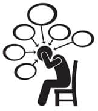

Pişt, depresif misin, bana mı öyle geldi?
İnanılmaz kilo almış, sonra onları geri verememiş, üstüne üstüne gelen hormonlarla baş edememiş, hiç beklemediğin bir anda bir ya da iki ya da üç çocuk sahibi birden olmuş, sorumluluklarına dünya kadar sorumluluk eklenmiş, uykuların bölünmüş, fena halde çarpılmış, işini doğru düzgün yapamaz olmuşsun, yaşamın alt üst olmuş ve ilginç bir şekilde herkes senden normal davranmanı bekliyor.
Mümkün mü? Elbette değil. Depresyona gireceğin varsa girersin. Seni tetikleyecek bir şeyler olur ya da olmaz. Bazen de girecek fırsatın bile olmaz, çünkü kendini unutursun. Bana öyle oldu. Hamile kalmadan önce, hatta kafamda çocuk sahibi olmak gibi bir düşünce bile yokken, bir arkadaşımın hamilelik ve lohusalık depresyonuna yakinen şahit oldum. Bir gün evlerine gittiğimde onu bir kavanoz bal ve kucağında bebekle buldum. Emziği bal kavanozuna batırıyor sonra da ağzına tıkıyordu. Oysa malumun, bebeklere bir yıl bal verilmez.
Bu bilgiyi nereden öğrenmişim o zaman bilmiyorum, elinden bebeği de kavanozu da aldım. Oturup ağladı. Sarsılarak ağladı. Ben böyle istemiyordum, dedi. Birkaç yıl geçti, hamile kaldım. Ve hamileliğim boyunca onun gibi olmaktan çok çok çok korktum. Hatta psikoloğa gidip, hamileyim depresyona girmekten çok korkuyorum, dedim. Korkma, girersen çıkartırız, dedi, güldük. Ama hep içimde bir yerlerde bu korkuyla yaşadım.
Davranışlarım elbette ki normal seyretmedi. Daha az güler, daha çok şeye ağlar, daha çok düşünür, daha çok dalar, daha çabuk sinirlenir ve daha çabuk başkalarına çamur atar oldum. Üst üste yaşadığım iki hamilelik, lohusalık ve iki yıl içinde sahip olduğum üç çocukla hep depresyonun kıyılarında dolandım durdum.
Aşağı biraz baksam, birkaç bir şey daha olsa, düşüverecektim ama gündelik hayata tutunmak için çok çaba sarf ettim. Yine de davranışlarım ikizler 2 yaşına geldiklerinde ancak normale döndü diyebilirim. O uçuruma düşmemek için; daha önce yapmaktan zevk aldığım şeyleri elimden geldiğinde yapmaya devam ettim.
Okumak iyi geliyor, bunu biliyorum örneğin. Bu alışkanlığımı hiç bırakmadım. Çocukları sallarken, emzirirken, çorba karıştırırken, onlar oyuna dalmışken okudum. İşe çabuk başladım, normal yaşamdan uzaklaşmamaya gayret ettim. Bölünen uykularımın, uykusuzluğumun çaresi yoktu. Erken yatmayı tercih ettim. Ve her öğle arası, başımı koltuğumun kenarına yaslayıp 15 dakika uyudum. Nefes almak için bir şeyler yaptım.
İlk bulduğum fırsatta kendimi dışarı attım. Name’nin hamileliğinde o kadar çok yürüdüm ki, nerdeyse parkta doğuracaktım. Keyif verecek şeylerden elimi eteğimi çekmemeye çalıştım. Çocuklar oyun oynayabilecek kıvama geldiklerinde günlerim daha eğlenceli geçmeye başladı. Hafta sonu ormanda çamurda sürünürken, her akşam doktorculuk, tamircilik, çöpçülük, futbol, top savaşı vs. oynarken depresyona nasıl gireceksin ki?
Yine de, söylemeden geçemeyeceğim, benden yapmam gerekenin üstünde bir normallik bekleyen, destek olmak yerine eleştirmeyi tercih eden, dinlemek, yardımcı olmak ya da tepkisiz kalmak yerine sanki üç çocuk dünyaya getirmemişim de eve üç tane kedi yavrusu almışım gibi normal hayatıma devam etmemi bekleyenlerin bu tuhaf tavırlarına anlam veremedim.
Zaman zaman, hakikaten depresyonda mıyım acaba, depresyona girdim de ben mi fark etmedim diye düşünmeme sebep olan arkadaşlarım oldu. Bunun için yine aynı doktora gittim; hani depresyona girmekten korkuyorum dediğim doktora. Sizce girmiş olabilir miyim, ben fark etmiyor olabilir miyim, dedim. Kızdı, yeter ama bir şeyin yok dedim ya, git çocuklarınla ilgilen, işine bak,kimseyi de umursama, dedi. Öyle yapmak için elimden geleni yaptım, hâlâ yapıyorum. İşte böyle. Söyleyebileceğim tek şey, seni kimsenin, hiçbir şeyin, hiç kimsenin üzmesine izin verme, çocuğuna sarıl ve gülmek için bahaneler üret. Unutma, sen düşersen, bebek yukarıda kalmaz.